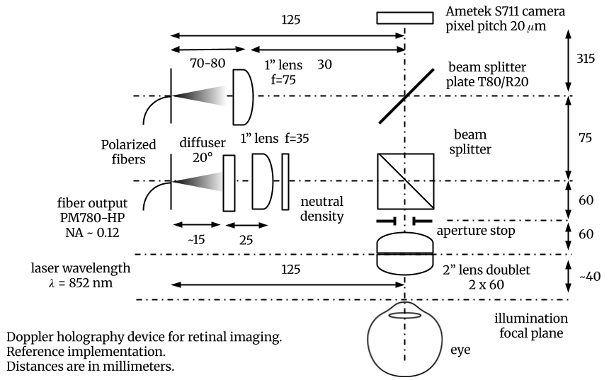
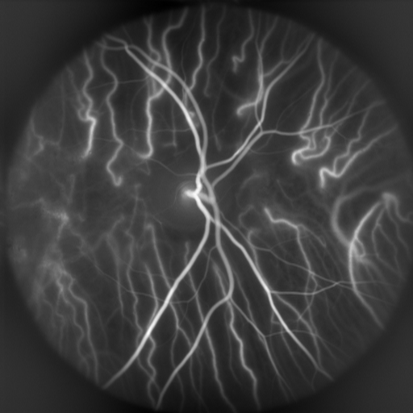
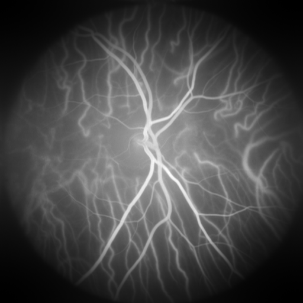
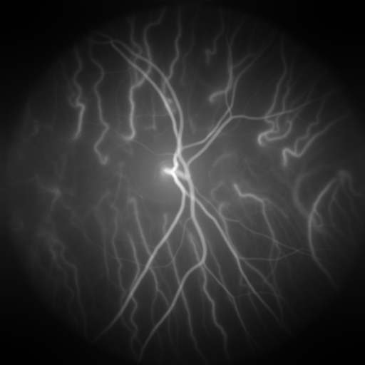
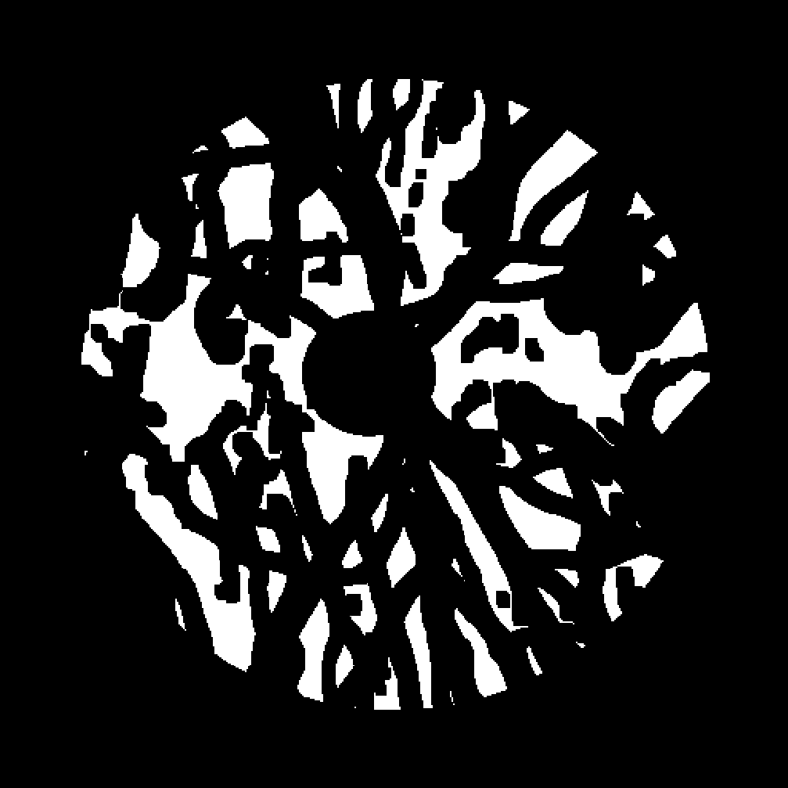
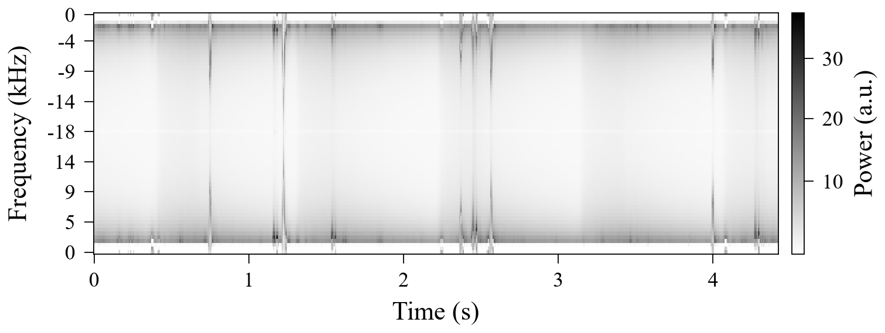
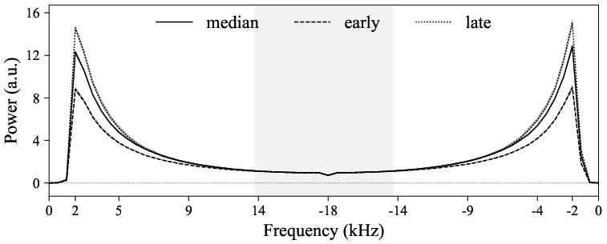
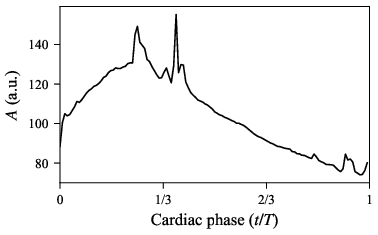
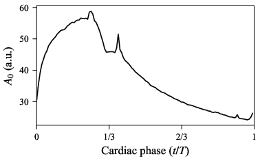
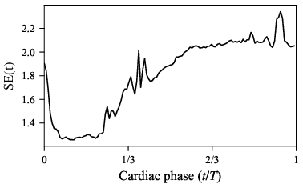

利用激光多普勒全息术低频光谱实现视网膜与脉络膜微血管功能表型分析
摘要
以37 kHz帧率记录的激光多普勒全息术光涨落谱，其低频部分通常被滤除，以显示视网膜与脉络膜主要血管中的功能性血流波形。我们通过选取完整心动周期，并在血管无法分辨、间歇性眼动可能主导信号的区域依次采用空间中值与逐搏中值处理，构建出毛细血管相关区域内的时变谱超出量（SE）分布。在每个相位处，谱超出量将近 kHz 处两个固定低频峰之间的多普勒谱积分面积，与由近 kHz 处高频尾部定义的参考面积进行比较。所得波形以归一化心动相位为横轴显示，在整个心动周期内保留了变化，为探索其时间组织规律提供了基础。我们用谱超出量指数（SEI）来概括谱超出量强度，SEI 定义为 SE 的时间中值；同时还给出了频谱池化后的另一种评估方式。一个代表性记录说明了该构建过程。其生理特异性与重复性仍有待量化。
I 引言
视网膜激光多普勒全息术（LDH）利用超高速相机，测量眼底运动血细胞所散射光中随频率分辨的涨落。在37 kHz的记录帧率下，通常滤除低于6 kHz的频率成分，以显示视网膜与脉络膜主要血管中的功能性血流波形 [29, 32, 34, 2]。毛细血管相关区域的谱形提供了一个互补的观测量，但其解释取决于散射几何、多重散射、红细胞压积、血管密度以及运动 [4, 35, 16, 8]。
传统相位分辨多普勒OCT通过光学相移测量轴向运动。在毛细血管中，微小的轴向相位增量可能接近相位噪声本底，对横向流动尤其如此，这使得脉络膜毛细血管难以评估 [30]。散斑方差、去相关时间与频谱展宽提供了互补的运动灵敏度。在适当的光学模型下，去相关时间与频谱宽度可用于估计具有物理单位的速度，尽管这种推断不如直接测量轴向多普勒频移那样直接 [38, 30]。OCT血管成像（OCTA）利用重复B扫描之间的变化，形成深度分辨的微血管图 [23, 44]。
时间采样对恢复毛细血管波动至关重要。Migacz et al. 利用1.6-MHz傅里叶域锁模激光器和接近2 kHz的B扫描速率，提升了脉络膜毛细血管层与脉络膜的OCTA对比度[26]，其速度远快于常规3–5 ms扫描间隔所对应的几百赫兹重复率[45]。Puyo et al. 采用2 kHz重复OCT B扫描，分辨出心跳引起的脉络膜毛细血管层频谱展宽，并以赫兹为单位的谱宽指数对其进行了量化[30]。在该构型下，他们记录的OCT频谱集中在约1 kHz以下。
这些模态之间的一个关键区别在于光学切片所选定的动态光散射状态。OCT与OCTA利用相干门控将信号定位于深度方向，并抑制多次散射的贡献，而常规en face激光多普勒全息术（LDH）和激光散斑对比度成像（LSCI）不具备这种深度门控[38, 30]。在en face视网膜图像的给定位置处，未经深度门控探测到的光子可能在与运动血细胞的连续相互作用中累积了多普勒频移。因此，在速度相当的情况下，预期会出现更宽的涨落谱和更快的去相关[4, 9]。
这些发现促使我们分析LDH中与毛细血管相关的光谱动态。在接近2 kHz时，代表性眼底图像呈现弥散的对比度，血管轮廓无法分辨。间歇性扫视产生宽带条纹，掩盖了较弱但反复出现的光谱特征[32, 34, 31]。我们力求在无光学切片的条件下恢复这些特征：选取无视网膜或脉络膜可见血管的区域，保留完整的心动周期，先进行空间中值处理，再在各心跳的对应相位处进行聚合。空间选取限制了可分辨血管的贡献，而中值聚合则抑制了间歇性运动伪影。这些步骤共同揭示出低频光谱结构及其在一个心动周期内的变化。
I.1 OCTA与视网膜和脉络膜微血管床
I.2 青光眼：视盘周围与黄斑微血管系统
I.3 糖尿病视网膜病变：血管丛特异性缺血与血管功能
I.4 年龄相关性黄斑变性：脉络膜毛细血管层的支持作用与早期进展
在年龄相关性黄斑变性（AMD）中，脉络膜毛细血管层—Bruch膜—视网膜色素上皮（RPE）界面为光感受器代谢提供支持。[25] OCTA血流信号缺损与进展相关，[11, 28] 并与视觉功能障碍相关，尤其是视杆细胞介导的暗适应延迟。[21] 玻璃膜疣、RPE改变、衰减与分割会影响测量信号，而视网膜与更深层脉络膜的散射则对LDH有贡献。因此，结构OCT、脉络膜毛细血管层OCTA与暗适应是研究功能性频谱读出的相关比较指标。
| Territory | 生物学与临床背景 | Established comparators |
|---|---|---|
| 放射状视盘周围毛细血管 | 为神经纤维层轴突提供支持；青光眼 | 视网膜神经纤维层（RNFL）与神经节细胞结构、视野、视神经乳头及黄斑OCTA血管密度 |
| Macular retinal plexuses | 为视网膜内层提供支持；糖尿病视网膜病变（DR）与黄斑缺血 | 可分辨血管丛的OCTA、无灌注、中心凹无血管区形态、DR分期及水肿 |
| Choriocapillaris | 为视网膜色素上皮（RPE）与光感受器提供支持；年龄相关性黄斑变性（AMD） | OCTA血流信号缺失、玻璃膜疣与RPE结构、视杆细胞介导的暗适应 |
I.5 研究定位与目标
多普勒OCT、激光散斑方法与眼科超声可提供互补的血流动力学测量，其空间、时间与深度灵敏度各不相同。[48, 10, 3, 43] 激光多普勒全息（LDH）将全场光谱与心动周期波形测量相结合。[33, 17] 排除血管的区域中可能仍含有未分辨的微血管、较大血管的渗漏以及非血管性散射，因此该信号与毛细血管相关，却不具备解剖学特异性。[36, 30]
主要结果是构建了沿对齐心动周期的光谱超额波形，并以归一化相位为横轴显示。SEI以时间中位数概括其强度；文中还定义了一种替代的合并光谱评估方法。一条代表性记录说明了该构建过程。所保留的时间信息为后续探索波形组织形式奠定了基础，包括 Buisson 等人讨论的描述符。[6]
II 实验方法
光学系统与记录条件遵循相关的LDH原始研究方案。
II.1 光学系统
用于超高速激光多普勒全息的临床样机与光学配置如图1所示。

II.2 记录条件
在取得书面知情同意后，我们在一名健康25岁男性的一只眼中，于未经药物性散瞳的条件下采集了代表性记录的视网膜全息图。采集过程中，受试者用对侧眼注视静态注视靶标。所有操作均遵循《赫尔辛基宣言》，并获得当地伦理委员会批准。进入人眼的漫射焦点处的光功率为5.0 mW。在对这一852 nm漫射麦克斯韦（Maxwellian）构型的报告评估中，最保守的设计建议是工作光功率不超过约6 mW，该限值由ISO 15004-2:2024的虹膜估计给出；ANSI Z80.36-2021的视网膜设计估计约为11 mW，且眼前节条件并非限制因素。[5]
III 方法
III.1 重建与多普勒频谱的时间解调
记录的干涉图通过菲涅耳变换，以480 mm的重建距离从相机平面数值传播到视网膜共轭平面。该变换将二次空间相位因子与二维傅里叶变换相结合，以恢复复视网膜光场（对应相机帧）。[32, 2] 在每个由256帧组成的非重叠块中，将复光场排列为时空矩阵并进行奇异值分解（SVD）。在重建滤波光场之前，去除与最大奇异值对应的24个分量，以抑制占主导的空间相干杂波与眼球整体运动。[31] 随后对每个像素处的滤波复光场进行256点时间快速傅里叶变换（FFT），得到复多普勒幅度及其功率谱，其中为采集时间窗的索引，为多普勒角频率。在 kHz下，每个时间窗跨越6.92 ms，原始FFT频点间隔为144.5 Hz。对每组四个相邻原始FFT频点的功率取平均，可将完整的带符号频谱保留为64个导出频点，其标定间隔为 kHz。EyeFlow v1.24.0为每个导出频点赋予其四个原始频点的带符号频率均值。频率以千赫兹表示为，正、负分支按其存储的FFT顺序保留；奈奎斯特极限为 kHz。[12] 随后将带时间戳的频谱配准到统一的归一化心动相位网格与完整心动周期上。SVD剔除阶数是固定的处理选择；残余运动由后续的稳健池化加以处理，而非假定其在该阶段已被完全去除。
III.2 通过空间滤波与完整心动周期池化恢复低频谱
超高速激光多普勒全息术（LDH）可获得整个眼底的多普勒功率谱。在低频下，空间图样以弥散分布为主而非可分辨的血管结构，因此分析对象是谱形，而非血管形态。恢复处理由三种互补操作组合而成。第一，空间判别与滤波在中心视场内排除分割出的可见视网膜血管、脉络膜血管以及视盘，所用的是独立获取的血管掩模，而非低频血管对比度。已有研究表明，多普勒全息图相关的动脉—静脉分割可从心动特征中获益[14]，但这并不能说明保留区域具有毛细血管特异性。记录保留掩模的覆盖率。第二，心动配准保留四个完整心动周期，并丢弃边缘处不完整的周期。相位零点取动脉波形时间导数的最大值，对应收缩期最大加速度。每个周期延伸至该标志点下一次出现处，并重新缩放为归一化相位。第三，先在每个采集时刻与导出的频谱分箱上，对保留的、已排除血管的像素计算中值谱；有限的负空间中值被截断为零。随后在每个完整心动周期内，将这些空间中值线性插值到统一的心动相位网格上。记为这些相位对齐的空间中值谱。EyeFlow v1.24.0 在每个频率上对所有有效的相位—心动周期样本取一次中值，以构成池化谱：
| (1) |
而心动相位分辨谱为
| (2) |
其中是配准后心动周期内的时间坐标，为其归一化相位，为完整心动周期的序号；仍为采集时间坐标。每个心动周期都在同一相位网格上重采样。在式(1)中，表示对相位—心动周期样本取单次联合中值，而式(2)则在每个相位处分别对各心动周期取中值。因此未必等于：后者是嵌套中值，而中值一般不满足结合律。这两种归约都位于空间中值之后，省略非有限的相位—心动周期样本，并保留输入的分箱顺序。这种先进行空间归约、再按心动周期聚合的做法，可以抑制孤立且不重复的扫视条纹。图 2展示了测量区域的选取，而图 3和4展示了采集时间谱中的运动相关条纹及其紧凑的谱表示。


(a) (b)


(c) (d)

EyeFlow v1.24.0为掩模配准、空间归约、心动配准、相位–搏动联合频谱池化以及光谱面积计算提供参考代码。[12] 绘图所用的物理频率在整个分析中保持不变。面积在展开的存储箱坐标中求值，使用校准后的正频率箱间距，而不是跨过带符号显示轴上的不连续处进行积分。该间距的共同变化会同比缩放和，并在二者的比值中抵消。
III.3 光谱过量分布的构建
两个峰值索引和分别选为最接近kHz和kHz的导出箱，并在整个心动周期内保持不变。按上述校准，它们的中心约为kHz和kHz。在每个相位下，为按存储箱顺序在这两个索引之间下方的梯形面积。参考高度为中心高频谷附近固定邻域内的功率中位数。参考实现采用存储箱的中心四分之一部分，对本64箱频谱而言包含16个箱，由此得到参考矩形。光谱过量为
| (3) |
在每个配准后的相位上计算该比值，即可构建整个心动周期内的分布。峰值索引保持不变，而中心谷参考值在每个相位重新计算。积分遵循存储的带符号箱顺序；共同的频率间距因子在比值中抵消。

谱超额度量的是经谷值归一化的相对面积。正值表示积分面积超过参考矩形；零表示二者面积相等，这并不要求谱完全平坦。的增大或的减小都会使升高，因此两条面积曲线都与波形一同保留（图5）。在给定相位处的公共乘性谱增益会相互抵消，但加性背景或随频率变化的背景不会抵消。需要正值且足够稳定的；对于无效或信号不足的分母，依据预先规定的质量判据加以标记。参考处理采用对 NaN 不敏感的中心频箱中位数。[12]



III.4 谱超额指数
谱超额指数为
| (4) |
中位数在配准后心动周期的等间隔有效相位采样上取值，用于概括典型的谱超额强度。
SEI 也可在谱池化后计算。池化谱指数不同于的时间中位数（式（4））。对于这种替代评估，令为在两个固定峰值索引之间的梯形面积，为同一中心参考邻域内的功率中位数，为相应的参考矩形。该指数即为。先对谱进行池化再计算这一比值，所得结果未必等于逐相位比值的中位数。我们用表示这一替代量，以区别于式（4）。EyeFlow v1.24.0 导出的 SEI 为有效逐相位值的时间中位数；池化谱替代量在此定义为一种单独的描述性评估。[12]
两种评估结果都是相对谱超额的无量纲度量。它们不用于测量绝对血流量、血细胞速度或毛细血管密度。二者均要求参考面积为正值且足够稳定，无效或信号不足的相位按与波形构造相同的质量判据加以标记。
III.5 质量控制
IV 结果
IV.1 相位分辨谱超额分布的恢复
V 讨论
本文的主要贡献，是从空间上弥散、且已剔除血管区域的视网膜多普勒光谱中，构建出按心动相位分辨的光谱超出量分布。空间甄别、完整心动周期筛选与稳健聚合，即使在无法分辨单根血管的低频图像（本文研究的出发点）中，也能恢复出一条紧致的波形。所得的 保留了相对光谱超出量的时间信息与组织结构，而 SEI 则用其在整个心动周期上的中位数概括光谱超出量的强度。
这两种读出量描述的都是复合光学信号。保留下来的血管间隙区域可能包含毛细血管、未分辨的小动脉和小静脉、来自可见血管的残余贡献，以及视网膜或脉络膜散射。它们的相对权重取决于血管几何形态、深度、血细胞比容、多重散射以及光学采样条件。该方法既不区分视网膜与脉络膜的贡献，也不指认特定的血管丛，更不能把光谱超出量换算为绝对灌注量或速度。[35, 16, 8, 30] 加性背景、较小的凹谷参考区、不完善的配准以及残余眼动，都会影响波形及其标量摘要。因此，将 、 与 一并查看，是结果解释中不可或缺的一环。
V.1 与光学相干断层扫描血管成像（OCTA）及功能微血管表型分析的关系
OCTA 与光谱超出量考察的是血管信号的不同方面。OCTA 定位视网膜和脉络膜层板内可探测的血流，并量化其空间分布；而 描述的是深度积分后的多普勒光谱形状所具有的心动相位组织结构。这为检验二者的互补性提供了依据，但并不能据此假定某一方法具有更高的灵敏度或特异性。在青光眼中，相关比较包括视网膜神经纤维层（RNFL）与神经节细胞结构、视野，以及视神经乳头或黄斑区的 OCTA。在糖尿病视网膜病变（DR）中，相关比较包括各血管丛特异性的无灌注区、水肿与临床分期。在年龄相关性黄斑变性（AMD）中，相关比较包括脉络膜毛细血管血流信号缺损、玻璃膜疣/视网膜色素上皮（RPE）改变以及暗适应。[27, 41, 40, 21, 28] 要确立生理特异性与临床相关性，离不开这类比较。
V.2 探索时间组织结构的可能性
完整的 分布为描述时间组织结构提供了基础，其描述内容远不止单一的强度取值。候选的描述子族包括归一化时序与时间矩、波峰宽度、偏移与持续性、累积形状分位数、时间集中度或有效支撑、归一化斜率以及谐波组织。Buisson 等人提出的波形形状框架为视网膜动脉血流速度波形给出了这些描述子族的具体示例。[6] 将此类数学描述子适配到谱超出量，便可对 SEI 值相近的信号加以比较，考察其超出量在心动周期内何时出现、展宽多广以及分布是否规则。
这种适配需要明确的预处理与有效性规则，包括相位配准、采样以及任何谐波滤波。把波形幅度视为非负权重的描述子，要求谱超出量有限且非负，并且总和为正。这些数学方法的应用，并不会把动脉速度或累积位移的生理学解释转移到 上。本文既未计算也未临床验证任何此类扩展的描述子集合；本研究的结果是构建该分布及其 SEI 汇总指标。
VI 结论
通过血管剔除、完整心动周期选取和空间归并，再进行心动周期聚合，即可由视网膜多普勒谱构建出相位分辨的谱超出量波形 。SEI 以其时间中位数概括该波形的强度；另一种基于合并谱的评估方式则单独定义。一段代表性记录展示了这一构建过程，而完整波形则为后续探索时间组织结构提供了基础。技术重复性、生理特异性和临床价值仍有待确立。
开源代码可用性
EyeFlow v1.24.0 在 https://github.com/DigitalHolography/EyeFlow/releases/tag/v1.24.0 提供参考的血管剔除、心动周期聚合以及经校准的谱处理流程。[12] 式（3）与式（4）定义了相位分辨的谱超出量波形及其时间中位数指数。
References
- [1] (2018) The EYE-MI pilot study: a prospective acute coronary syndrome cohort evaluated with retinal optical coherence tomography angiography. Investigative Ophthalmology & Visual Science 59 (10), pp. 4299–4306. External Links: Document, Link Cited by: §V.1.
- [2] (2025) Ultrahigh-speed digital holography for quantitative Doppler imaging of the human retina. External Links: 2505.07823, Document Cited by: §I, §II.1, §II.2, §III.1.
- [3] (2010) Laser speckle contrast imaging in biomedical optics. Journal of Biomedical Optics 15 (1), pp. 011109. External Links: Document Cited by: §I.5.
- [4] (1981) Model for laser doppler measurements of blood flow in tissue. Applied Optics 20, pp. 2097–2107. External Links: Document Cited by: §I, §I.
- [5] (2022) Diffuse Maxwellian illumination for safe wide-field retinal Doppler holography. Note: Version 3, revised May 2026 External Links: 2212.13347, Document Cited by: §II.1, §II.2.
- [6] (2026) Transportable retinal Doppler holography waveform-shape metrics for functional microvascular assessment. Note: Zenodo External Links: Document, Link Cited by: §I.5, §V.2.
- [7] (2017) Detailed vascular anatomy of the human retina by projection-resolved optical coherence tomography angiography. Scientific Reports 7, pp. 42201. Note: PMID: 28186181 External Links: Document, Link Cited by: §I.1, §I.1.
- [8] (2023) Diffuse correlation spectroscopy: current status and future outlook. Neurophotonics 10 (1), pp. 013509. External Links: Document Cited by: §I, §V.
- [9] (2011) Due to intravascular multiple sequential scattering, diffuse correlation spectroscopy of tissue primarily measures relative red blood cell motion within vessels. Biomedical Optics Express 2 (7), pp. 2047–2054. External Links: Document Cited by: §I, §III.5.
- [10] (2012) Measurement of pulsatile total blood flow in the human and rat retina with ultrahigh speed spectral/fourier domain oct. Biomedical Optics Express 3 (5), pp. 1047–1061. External Links: Document Cited by: §I.5.
- [11] (2021) Choriocapillaris flow deficits as a risk factor for progression of age-related macular degeneration. Retina 41 (4), pp. 686–693. External Links: Document Cited by: §I.4.
- [12] (2026) EyeFlow: open-source retinal low-frequency doppler spectral analysis. Note: Software, version 1.24.0Released 23 October 2026; see the low-frequency spectra pipeline; accessed 31 October 2026 External Links: Link Cited by: §III.1, §III.2, §III.3, §III.4, Open-source code availability.
- [13] (2025) Holovibes: real-time ultrahigh-speed digital hologram rendering and short-time analysis. External Links: 2508.03911, Document, Link Cited by: §II.2.
- [14] (2025) Improving segmentation of retinal arteries and veins using cardiac signal in Doppler holograms. Note: Version 2, revised February 2026 External Links: 2511.14654, Document, Link Cited by: §III.2.
- [15] (2021) Characterization of laser speckle flowgraphy pulse waveform parameters for the evaluation of the optic nerve head and retinal circulation. Scientific Reports 11 (1), pp. 6847. External Links: Document Cited by: §I.2.
- [16] (2013) Inverse monte carlo in a multilayered tissue model: merging diffuse reflectance spectroscopy and laser doppler flowmetry. Journal of Biomedical Optics 18, pp. 127004. External Links: Document Cited by: §I, §III.5, §V.
- [17] (2026) Laser doppler holography for choroidal blood flow assessment: a systematic review of technical capabilities, validation studies, and clinical applications. Frontiers in Ophthalmology 6, pp. 1763171. External Links: Document Cited by: §I.5.
- [18] (2023) Parapapillary choroidal microvasculature predicts diabetic retinopathy progression and diabetic macular edema development: a three-year prospective study. American Journal of Ophthalmology 245, pp. 164–173. Note: PMID: 35863493 External Links: Document, Link Cited by: §I.3.
- [19] (1967) Radial peripapillary capillaries of the retina. i. anatomy: human and comparative. British Journal of Ophthalmology 51 (2), pp. 115–123. Note: PMID: 4959937; PMCID: PMC506341 External Links: Document, Link Cited by: §I.1.
- [20] (2014) Optical coherence tomography angiography of optic disc perfusion in glaucoma. Ophthalmology 121 (7), pp. 1322–1332. Note: PMID: 24629312; PMCID: PMC4082728 External Links: Document, Link Cited by: §I.2.
- [21] (2023) Choriocapillaris impairment is associated with delayed rod-mediated dark adaptation in age-related macular degeneration. Investigative Ophthalmology & Visual Science 64 (12), pp. 41. Note: PMID: 37768273; PMCID: PMC10540875 External Links: Document, Link Cited by: §I.4, §V.1.
- [22] (1999) The biological zero signal in laser doppler fluximetry—origins and practical implications. Pflügers Archiv 437, pp. 624–631. External Links: Document Cited by: §III.5.
- [23] (2006) Optical coherence angiography. Optics Express 14 (17), pp. 7821–7840. External Links: Document, Link Cited by: §I.
- [24] (2007) Influence of flickering light on the retinal vessels in diabetic patients. Diabetes Care 30 (12), pp. 3048–3052. Note: PMID: 17728481 External Links: Document, Link Cited by: §I.3.
- [25] (1994) High-resolution histologic analysis of the human choroidal vasculature. Investigative Ophthalmology & Visual Science 35 (11), pp. 3799–3811. Note: PMID: 7928177 Cited by: §I.1, §I.4.
- [26] (2019) Megahertz-rate optical coherence tomography angiography improves the contrast of the choriocapillaris and choroid in human retinal imaging. Biomedical Optics Express 10 (1), pp. 50–65. External Links: Document, Link Cited by: §I.
- [27] (2018) Macular and optic nerve head vessel density and progressive retinal nerve fiber layer loss in glaucoma. Ophthalmology 125 (11), pp. 1720–1728. Note: PMID: 29907322 External Links: Document, Link Cited by: §I.2, §V.1.
- [28] (2026) Choriocapillaris flow signal deficits are associated with AMD onset and early progression over three years: ALSTAR2 follow-up. Investigative Ophthalmology & Visual Science 67 (3), pp. 51. Note: PMID: 41879246; PMCID: PMC13035000 External Links: Document, Link Cited by: §I.4, §V.1.
- [29] (2015) Pulsatile microvascular blood flow imaging by short-time fourier transform analysis of ultrafast laser holographic interferometry. In 2015 8th Biomedical Engineering International Conference (BMEiCON), External Links: Document, 1510.01892 Cited by: §I.
- [30] (2025) Measuring choriocapillaris blood flow with laser doppler optical coherence tomography. Optics Letters 50 (8), pp. 2486–2489. External Links: Document Cited by: §I.5, §I, §I, §I, §V.
- [31] (2020) Spatio-temporal filtering in laser doppler holography for retinal blood flow imaging. Biomedical Optics Express 11, pp. 3274–3287. External Links: Document Cited by: §I, §III.1, §III.5.
- [32] (2018) In vivo laser doppler holography of the human retina. Biomedical Optics Express 9, pp. 4113–4129. External Links: Document Cited by: §I, §I, §III.1.
- [33] (2019) Choroidal vasculature imaging with laser doppler holography. Biomedical Optics Express 10 (2), pp. 995–1012. External Links: Document Cited by: §I.5.
- [34] (2019) Waveform analysis of human retinal and choroidal blood flow with laser doppler holography. Biomedical Optics Express 10, pp. 4942–4963. External Links: Document Cited by: §I, §I.
- [35] (2009) Review of methodological developments in laser doppler flowmetry. Lasers in Medical Science 24 (2), pp. 269–283. External Links: Document Cited by: §I, §V.
- [36] (1995) Choroidal blood flow by laser doppler flowmetry. Optical Engineering 34 (3), pp. 746–752. External Links: Document Cited by: §I.5.
- [37] (2016) Choriocapillaris flow features follow a power law distribution: implications for characterization and mechanisms of disease progression. American Journal of Ophthalmology 170, pp. 58–67. External Links: Document Cited by: §I.1.
- [38] (2010) Quantitative cerebral blood flow with optical coherence tomography. Optics Express 18 (3), pp. 2477–2494. External Links: Document, Link Cited by: §I, §I.
- [39] (2021) Impact of cardiometabolic factors on retinal vasculature: a 3 3, 6 6 and 8 8-mm optical coherence tomography angiography study. Clinical & Experimental Ophthalmology 49 (3), pp. 260–269. External Links: Document, Link Cited by: §V.1.
- [40] (2019) OCT angiography metrics predict progression of diabetic retinopathy and development of diabetic macular edema: a prospective study. Ophthalmology 126 (12), pp. 1675–1684. Note: PMID: 31358386 External Links: Document, Link Cited by: §I.1, §I.3, §V.1.
- [41] (2024) Rate of initial optic nerve head capillary density loss and risk of visual field progression. JAMA Ophthalmology 142 (6), pp. 530–537. Note: PMID: 38696186; PMCID: PMC11066764 External Links: Document, Link Cited by: §I.2, §V.1.
- [42] (2021) Impaired retinal microvascular function predicts long-term adverse events in patients with cardiovascular disease. Cardiovascular Research 117 (8), pp. 1949–1957. External Links: Document, Link Cited by: §V.1.
- [43] (2016) Ultrafast ultrasound imaging of ocular anatomy and blood flow. Investigative Ophthalmology & Visual Science 57 (8), pp. 3810–3816. External Links: Document Cited by: §I.5.
- [44] (2007) Three dimensional optical angiography. Optics Express 15 (7), pp. 4083–4097. External Links: Document, Link Cited by: §I.
- [45] (2019) High dynamic range optical coherence tomography angiography (HDR-OCTA). Biomedical Optics Express 10 (7), pp. 3560–3571. External Links: Document, Link Cited by: §I.1, §I.
- [46] (2025) Subclinical coronary atherosclerosis and retinal optical coherence tomography angiography. JAMA Cardiology 10 (11), pp. 1100–1111. External Links: Document, Link Cited by: §V.1.
- [47] (2026) Using OCT angiography to predict diabetic retinopathy progression and vision decline in a multiethnic cohort. Ophthalmology Science 6 (5), pp. 101111. Note: PMID: 41958713; PMCID: PMC13059305 External Links: Document, Link Cited by: §I.3.
- [48] (2003) In vivo imaging of human retinal flow dynamics by color doppler optical coherence tomography. Archives of Ophthalmology 121 (2), pp. 235–239. External Links: Document Cited by: §I.5.
- [49] (2015) Label-free density measurements of radial peripapillary capillaries in the human retina. PLOS ONE 10 (8), pp. e0135151. Note: PMID: 26252395; PMCID: PMC4529151 External Links: Document, Link Cited by: §I.1.
- [50] (2018) A novel strategy for quantifying choriocapillaris flow voids using swept-source OCT angiography. Investigative Ophthalmology & Visual Science 59 (1), pp. 203–211. External Links: Document, Link Cited by: §I.1.
- [51] (2026) Baseline deep capillary plexus ischemia predicts earlier diabetic retinopathy complications than foveal avascular enlargement. American Journal of Ophthalmology 292, pp. 322–334. Note: PMID: 42600886 External Links: Document, Link Cited by: §I.3.